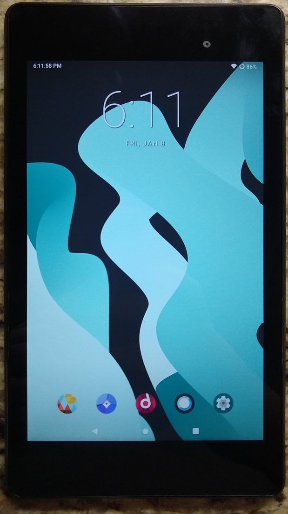

The Autopsy Report · Device #076
The Nexus 7 (2013)
The sequel that fixed everything: a Snapdragon S4 Pro, a 1920×1200 screen, and wireless charging — still $229.
What is this thing?
The Nexus 7 (2013) is the second-generation 7-inch tablet Google built with ASUS, announced July 24, 2013 and released July 26, 2013, starting at $229. Wikipedia It replaced the Tegra 3 with a Snapdragon S4 Pro, doubled the RAM to 2 GB, and jumped the display to 1920×1200 — at the same launch price as its predecessor.
It was also the first device to ship Android 4.3, and it added wireless charging and 5 GHz Wi-Fi — the two most-requested upgrades from the 2012 model. iFixit news
Not yet on our bench
This device is not on our bench. We don't own one, we haven't opened one, and we haven't powered one on. Everything on this page comes from public records: government filings, published teardowns by repair shops and journalists, and manufacturer documents. That's a legitimate way to learn a device's story — and it's also a limited one. There are no BareBoard photos, measurements, boot logs, or firmware notes here, because we haven't earned them yet.
When a unit of the Nexus 7 (2013) does reach our bench, this page gets a second edition: our own board photography, our own measurements, and whatever the device tells us when it wakes up. Until then, what follows is the public record, carefully sourced, with the gaps labeled as gaps.
A short history
- July 24, 2013Google announces the second-generation Nexus 7. Wikipedia
- July 26, 2013The new Nexus 7 goes on sale at $229. Wikipedia
- July 30, 2013Teardowns land within days: iFixit and The Register open one up and agree on the parts. iFixit teardown · The Register
- 2013Filed with the FCC as MSQK009. FCC filing (index unreachable during research) The filing index page was unreachable from our network during research — see the FCC section below.
The outside
A 7-inch, 1920×1200 display in a thinner, lighter body than the 2012 model — the bezels shrank and the soft-touch back got a smoother finish. Wikipedia Stereo speakers, a 5-megapixel rear camera (new for the line), and a notification LED round out the visible changes.
The photo below shows a 2013 Nexus 7 running a community Android build.

The board
iFixit's teardown describes a single main board with the Snapdragon S4 Pro at its center, four Elpida memory chips making up the 2 GB of RAM, and the SK Hynix eMMC nearby; the wireless-charging coil sits against the back cover. iFixit teardown The Register's teardown coverage walks the same board and confirms the layout. The Register
We have not photographed the board ourselves. One caution from the record: secondary sources disagree on the exact eMMC part number suffix — the table below carries the marking iFixit read, flagged accordingly.
Under the microscope: the chips
What's on the board, what each part does, and how sure we are — all from public teardown records, since we haven't seen the board ourselves. Likely means the public hardware record agrees on it. Confirmed is reserved for primary sources we could verify directly, like the government's own filing. Every row links somewhere you can read more.
| Chip | What it does | How we know | Dig deeper |
|---|---|---|---|
| Qualcomm APQ8064 Snapdragon S4 Pro |
The main processor — quad-core Krait plus Adreno 320 graphics. | Likely Identified by iFixit and The Register. | iFixit teardown |
| 4× Elpida J4216EFBG 512 MB each — 2 GB total |
Working memory, four chips around the SoC. | Likely Read off the board by iFixit. | iFixit news |
| SK Hynix H26M52003EQR 16 GB eMMC (marking per iFixit) |
Flash storage. Note: some secondary sources print a slightly different suffix. | Likely iFixit’s marking; suffix varies in secondary reporting. | iFixit teardown |
| Qualcomm Atheros WCN3660 | Wi-Fi/Bluetooth/FM combo radio. | Likely Identified in teardown chip lists. | The Register |
| Qualcomm PM8921 | Power management for the Snapdragon platform. | Likely Identified in teardown chip lists. | iFixit teardown |
| Analogix ANX7808 | SlimPort transmitter — video-out over the micro-USB port. | Likely Identified in teardown chip lists. | iFixit news |
| TI BQ51013B | Wireless-charging receiver — the Qi coil's other half. | Likely Identified in teardown chip lists. | iFixit teardown |
Deliberately omitted: two part numbers that appear in some secondary sources for this device — a Qualcomm RF transceiver and a Japan Display panel marking — could not be tied to the exact K009 variant in a source we trust, so they don't appear here. Unknown beats wrong.
The government's file on this device
The 2013 Nexus 7 was filed with the FCC as MSQK009. During our research the FCC's index page for this filing refused the connection, and per our own rules we don't retry a blocked fetch — so we report no grant dates, no exhibit dates, and no transmit powers for this filing rather than guess at them.
What we can say honestly: the filing exists under that ID, registered in the ASUS/Google Nexus line. If your network cooperates, the primary source is worth a visit: filing page. When we can reach it, this section gets the full treatment.
Debug and service modes
Google publicly documents the fastboot workflow for Nexus devices: the factory-images page describes flashing official system images with fastboot commands, which requires the bootloader mode the device ships with. Google factory images The bootloader on Nexus hardware is unlockable by design.
We have not unlocked, flashed, or fastbooted any 2013 Nexus 7. The mode is listed because Google documents the workflow — not because we've run it.
Our posture on all of the above: we describe what's publicly documented, and we don't go knocking. No device has been probed, reflashed, or opened on our bench — there is nothing here but reading.
What public records show
The sequel fixed the first generation's complaints. Faster chip, double the RAM, a far sharper screen, 5 GHz Wi-Fi, wireless charging, a rear camera — and the price didn't move. The teardown press treated it as the obvious upgrade. The Register
Some filings stay out of reach. The MSQK009 index page refused our connection during research. That's a gap in this report, labeled as one — not papered over with numbers from somewhere else. FCC filing (index unreachable during research)
What we haven't done
- We have not opened a 2013 Nexus 7, photographed its board, or measured anything on it.
- We have not captured a boot log or entered fastboot mode on this model.
- We have not resolved the eMMC part-number suffix disagreement in secondary sources.
- We have not retrieved the MSQK009 FCC exhibit list — the index page was unreachable during research.
By the numbers
- Model: Nexus 7 (2013), Wi-Fi (K009); co-developed by Google and ASUS Wikipedia
- FCC ID: MSQK009 (filing index unreachable during research) FCC filing (index unreachable)
- Main chip: Qualcomm Snapdragon S4 Pro (APQ8064) iFixit teardown
- Memory: 2 GB RAM iFixit news
- Display: 7 in, 1920×1200 Wikipedia
- Storage: 16/32 GB Wikipedia
- Released: July 26, 2013, from $229 Wikipedia
- Wireless: dual-band Wi-Fi, Bluetooth 4.0, NFC, GPS, Qi wireless charging Wikipedia
Words to know
Every term this page uses, in plain English. No prior knowledge required.
- Bootloader
- The first program that runs when a device powers on — it decides whether to start Android or wait for instructions.
- Fastboot
- A mode on Nexus devices for talking to the bootloader over USB: Google documents it for flashing official system images.
- eMMC
- Embedded MultiMediaCard: flash storage plus its controller in one package.
- SlimPort
- A standard for sending video out over a micro-USB port — the ANX7808's job.
- Qi wireless charging
- Charging over a magnetic coil instead of a cable; the BQ51013B receives the power.
- FCC ID
- The ID the FCC assigns to each approved wireless product. Punch it into fccid.io and the whole public filing comes up.
Sources & confidence
- Chip identities: iFixit's 2013 teardown and news write-up, plus The Register's teardown coverage. Marked Likely throughout — we haven't seen the board ourselves.
- FCC ID: public records; the MSQK009 index page was unreachable during research, so no filing details are reported. That's a labeled gap.
- Release date, price, and launch specs: the device's encyclopedia entry, cross-checked against launch coverage.
- Fastboot workflow: Google's own factory-images documentation.
- Anything not listed here is unknown until the bench says otherwise. We'll say so, out loud, when that's the case.
Legal note. BareBoard is an educational project. Everything on this page is assembled from public records and freely-licensed photography credited in its caption. We don’t publish, host, or distribute firmware, keys, passwords, or credentials. Product names and trademarks belong to their respective owners and appear here only to identify the hardware. If you believe anything here infringes your rights, contact us and we’ll address it promptly.